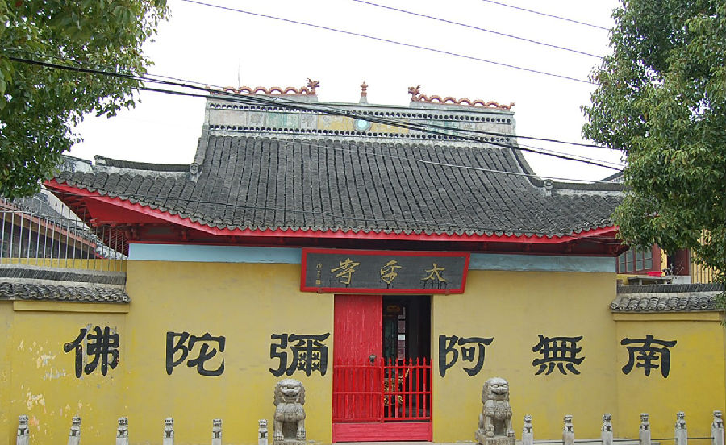

嘉兴市文物保护网 · 市级文物保护点 · 2022-05-16 · 原文

新篁太平寺位于南湖区凤桥镇新篁社区镇南街。旧名太平禅院，始建于宋。传宋高宗南渡时曾避难于寺中，故曾名“报恩寺”，明洪武年间，瘟疫流行，百姓凡饮用寺中井水者皆无恙，遂改名“太平寺”。元时毁，明弘治甲寅年（1494）重建，清嘉庆二年（1797）重修。咸丰十年（1860）遭遇战乱，殿宇大半被毁，至抗战前后部分寺基沦为摊贩市场，解放时，仅剩大雄宝殿一座，并一度移作粮仓。1993年后逐步恢复太平寺当年的面貌，占地面积3422平方米。该寺历史悠久，在当地影响较大，具有较高的历史价值。2021年被公布为嘉兴市文物保护点。